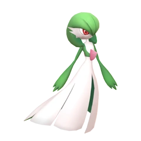

-
Pikachu
HP 300

Descrição
Pikachu is a short, chubby rodent Pokémon. It is covered in yellow fur with two horizontal brown stripes on its back. It has a small mouth, long, pointed ears with black tips, and brown eyes. Each cheek is a red circle that contains a pouch for electricity storage. It has short forearms with five fingers on each paw, and its feet each have three toes. At the base of its lightning bolt-shaped tail is a patch of brown fur. A female will have a V-shaped notch at the end of its tail, which looks like the top of a heart. It is classified as a quadruped, but it has been known to stand and walk on its hind legs.
-
Charizard
HP 600

Descrição
Charizard is a draconic, bipedal Pokémon. It is primarily orange with a cream underside from the chest to the tip of its tail. It has a long neck, small blue eyes, slightly raised nostrils, and two horn-like structures protruding from the back of its rectangular head. There are two fangs visible in the upper jaw when its mouth is closed. Two large wings with blue-green undersides sprout from its back, and a horn-like appendage juts out from the top of the third joint of each wing. A single wing-finger is visible through the center of each wing membrane. Charizard's arms are short and skinny compared to its robust belly, and each limb has three white claws. It has stocky legs with cream-colored soles on each of its plantigrade feet. The tip of its long, tapering tail burns with a sizable flame.
-
Mewtwo
HP 800

Descrição
Mewtwo is an artificial Pokémon. It is a bipedal, humanoid Pokémon with some feline features. It is primarily gray with a long, purple tail. On top of its head are two short, blunt horns, and it has purple eyes. A tube extends from the back of its skull to the top of its spine, bypassing its neck. It has a defined chest and shoulders, which resemble a breastplate. The three digits on each hand and foot have spherical tips. Its tail is thick at the base but thins before ending in a small bulb.
-
Gardevoir
HP 200
Descrição
Gardevoir is a bipedal, humanoid Pokémon whose body resembles a flowing gown. Most of its body is white, but its hair, arms, and the underside of its gown are green. Its hair curls over its face and down the sides of its head. Behind its red eyes are short spikes, resembling a masquerade mask. It has long arms with three fingers on each hand and slender white legs. A red, fin-like horn extends from its chest, and a shorter, more rounded horn extends from the back. A band of green on its chest extends to the center of the front horn and connects to its sleeve-like arms.